Repaso de la Tanda 10N2
Las cuentas del grupo: «¿Entre quién?», quién le debe a quién y [Ya está pagado]. Marca cada punto en tu teléfono cuando lo hayas comprobado (se guarda en este navegador).
§0 · Antes de empezar ✅ Hecho — Prompt guardado en docs/dias/PROMPT_TANDA10N2.md y en el commitDónde: No es de móvil. ✅ Hecho — Design: Piezas/Cuentas Grupo (ya puesta al día con DESIGN_26OCT.zip en la 10N)Dónde: No es de móvil. §1 · ¿Entre quién? ✅ Hecho — En la hoja de añadir un gasto [Para todos], debajo de «¿Quién lo ha pagado?», «¿Entre quién?» con una pastilla por persona, todas marcadas por defecto y «4 de 4» a la derecha, con el estilo de elegirDónde: Presupuesto (cartera) > Extras > [+ Añadir gasto] > [Para todos]. Cualquier permiso (administrador, puede editar o solo recomienda). 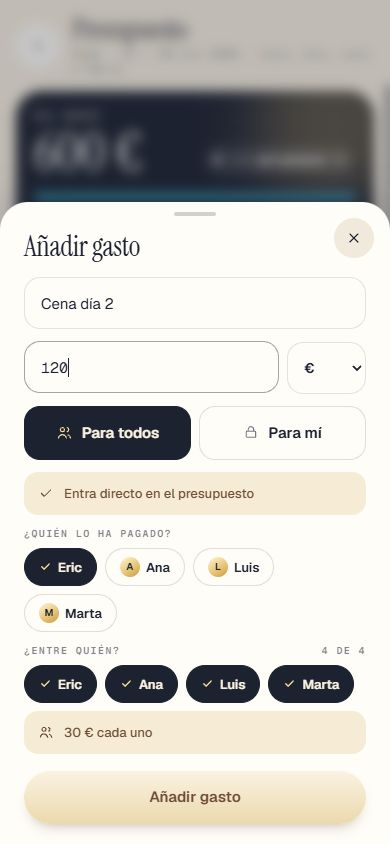
✅ Hecho — Debajo, la línea «30 € cada uno», que cambia al desmarcar a alguien («3 de 4 · 40 € cada uno»)Sin importe escrito, la línea pide escribirlo. Dónde: Misma hoja: escribe un importe y toca una pastilla de «¿Entre quién?» para desmarcarla. 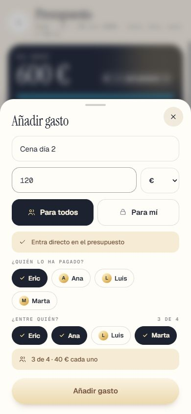
✅ Hecho — A partes iguales y en euros entre los marcados; los céntimos que sobren (100 € entre 3) al que lo pagó, para que las cuentas cuadren al céntimoSe cuenta en la moneda del viajero (euros por defecto): lo que está en otra moneda se pasa con el cambio del día; sin cambio no cuenta. Probado: 100 € entre 3 = 33,33 + 33,33 + 33,34 y la suma de saldos es 0. Dónde: Cuentas del grupo (presupuesto > tarjeta «Cuentas del grupo»): «Ha pagado… · Le toca…». 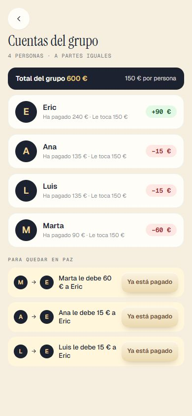
⚠️ A medias — Lo reservado para varios en RESERVAS («¿Para quién es?») cuenta igual: lo pagó quien lo añadió y se reparte entre los marcadosHecho para las entradas del dueño con `paraQuien` (las paga el administrador, que es quien las guarda en el viaje). Billetes, alojamiento, seguro y coche no entran en las cuentas (no tienen «¿Para quién?»). Probado con datos, no en pantalla con una reserva real. Dónde: RESERVAS > añadir una entrada con precio y marcar a dos personas; luego Presupuesto > Cuentas del grupo (con la cuenta del administrador). ✅ Hecho — Los gastos [Para mí] no cuentan en las cuentas del grupo; los «Pendiente de…» tampoco, hasta que se aceptanTampoco cuentan los rechazados. Dónde: Presupuesto > Cuentas del grupo: añade un [Para mí] o uno pendiente y mira que el total no cambia. ✅ Hecho — Se puede editar un gasto [Para todos] después (quién lo pagó, entre quién, el importe): quien lo añadió, el administrador y los que pueden editarSe toca el gasto en Extras. En la base de datos lo hacen solo esas tres personas (probado con 4 cuentas). Dónde: Presupuesto > Extras > tocar un gasto del grupo (administrador, puede editar, o quien lo añadió). 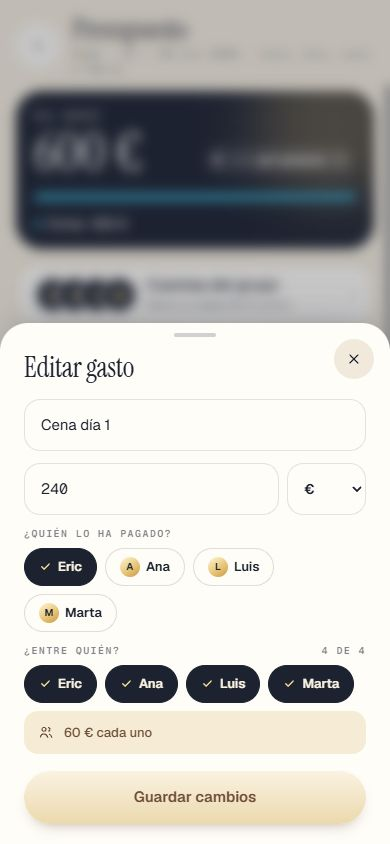
§2 · La pantalla «Cuentas del grupo» ✅ Hecho — 01 · Debajo de «Del grupo», la tarjeta «Cuentas del grupo» con las caras y la primera deuda («Ana le debe 15 € a Eric») o «Estáis en paz»; solo en viaje compartidoLa primera deuda es la mayor. Si no hay gastos, dice «Todavía no hay gastos del grupo». Dónde: Presupuesto (cartera de arriba), con un viaje que tenga al menos otra persona. Cualquier permiso. 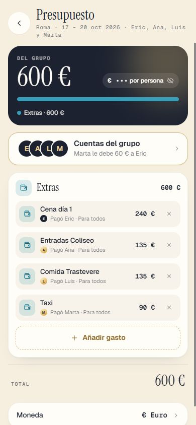
✅ Hecho — 04 · «4 personas · a partes iguales», arriba «Total del grupo 600 € · 150 € por persona»Dónde: Presupuesto > tocar la tarjeta «Cuentas del grupo». ✅ Hecho — 04 · Cada persona con «Ha pagado 240 € · Le toca 150 €» y su saldo en verde con «+», en rojo con «−» o «0 € ✓»Dónde: Misma pantalla. ✅ Hecho — 04 · «Para quedar en paz»: lo mínimo de pagos para dejar a todos a cero, cada uno con [Ya está pagado]Reparto voraz (el que más debe paga al que más le deben): con n personas, como mucho n−1 pagos. Dónde: Misma pantalla, abajo. ✅ Hecho — Si no todos tienen lo mismo (¿Entre quién?), «Le toca» es lo de cada uno y arriba solo el total (sin «por persona»)Tampoco pone «a partes iguales» en ese caso. Dónde: Añade un gasto [Para todos] desmarcando a alguien en «¿Entre quién?» y abre Cuentas del grupo. ✅ Hecho — 05 · Al tocar [Ya está pagado]: la línea en verde con «✓ Pagado» y cambian los saldosDónde: Cuentas del grupo > [Ya está pagado] en una línea. 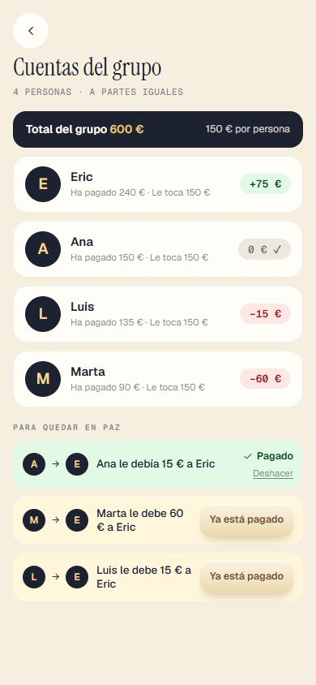
✅ Hecho — 05 · Lo puede tocar quien paga, quien cobra, el administrador o los que pueden editarUn «solo recomienda» que no es parte del pago no ve el botón; y la base de datos también lo impide. Dónde: Con la cuenta de Ana (solo recomienda) ve solo su línea con botón; con el administrador, las tres. 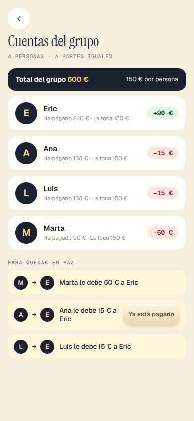
✅ Hecho — 05 · Al otro le llega a la campana «Eric ha marcado como pagados los 15 € que le debías.»Aviso nuevo `pago_marcado` (el servidor y el móvil usan el mismo texto). Si lo marca una tercera persona, les llega a los dos; el texto cambia («Luis ha marcado como pagados los 20 € que le debías a Eric.»). Dónde: Con la cuenta de Ana: campana de arriba tras marcar Eric el pago. 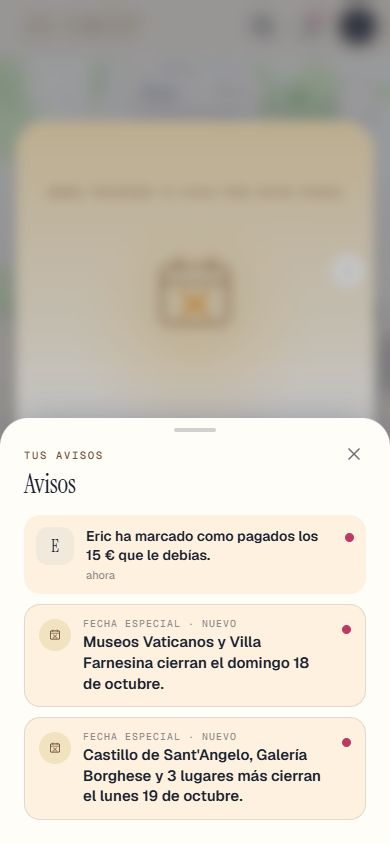
✅ Hecho — 05 · Se puede deshacerCon «Deshacer» bajo «✓ Pagado» (quien paga, quien cobra, el administrador y quien puede editar). Dónde: Cuentas del grupo > «Deshacer» en una línea pagada. ✅ Hecho — 06 · Todos en paz: todos a «0 € ✓» y la tarjeta verde «Estáis en paz»La tarjeta del presupuesto también pasa a verde con «Estáis en paz». Dónde: Marca los tres pagos en Cuentas del grupo. 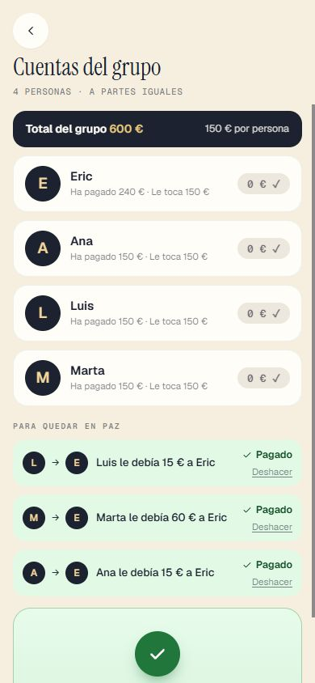
✅ Hecho — Lo ve todo el grupo, con cualquier permisoDónde: Con la cuenta de Ana (solo recomienda): Presupuesto > Cuentas del grupo. ⚠️ A medias — En directo: si alguien añade un gasto o marca un pago, a los demás les cambia sin recargarRealtime de Supabase sobre gastos y pagos, más lectura cada 20 s y al volver a la app. Probado con un servidor de mentira que avisa del cambio; Realtime por la red real solo se verá con la 0040 aplicada. Dónde: Dos móviles: uno con Cuentas del grupo abierta; el otro marca un pago. ✅ Hecho — Si alguien sale del viaje o lo quitan, sus gastos y lo que le tocaba se quedan en las cuentas, con su nombreUn disparador guarda su nombre al salir o al quitarlo (`trip_ex_miembros`); en las cuentas sale con «Ya no está en el viaje». Si no puso ni le toca nada, no sale. Sin la 0040 saldría como «Alguien». Dónde: Administrador: quita a alguien en Personas del viaje y abre Cuentas del grupo. 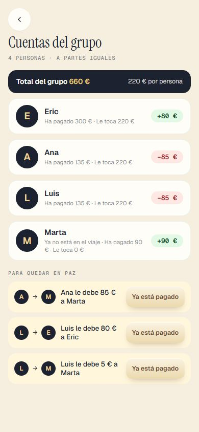
✅ Hecho — Sin compartir, ni la tarjeta ni la pantallaTampoco con la 0037 sin aplicar. Con la 0040 sin aplicar, las cuentas se ven (gastos entre todos) pero sin botón de marcar pagos. Dónde: Dueño sin invitados: Presupuesto. 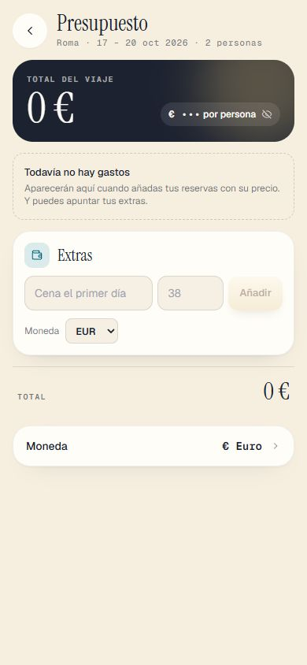
§3 · La prueba ✅ Hecho — Prueba nueva pruebaTanda10N2133 comprobaciones · 0 fallos (cuenta pura, PGlite con la 0040, pantallas en SSR, código y pantalla real a tamaño de móvil). Dónde: No es de móvil. ✅ Hecho — La batería rápida y pruebaJutrip (si algo falla solo al correr con las demás y solo pasa solo, se dice)La prueba 10N2 pasó en la batería completa. Fallaron (por carga o por la pantalla de ruta rápida, no por la tanda) pruebaJutrip, pruebaRevisionLargos, pruebaTanda10B, 10G, 10H, 10I, 10M_app, 10N_presupuesto, 10P_sorteo y los envoltorios 10P y 10N; repetidas solas pasan todas con 0 fallos (10P: 3625; 10N: 418). Se arreglan más adelante, como se pidió. Dónde: No es de móvil. §3 · Capturas ✅ Hecho — Capturas en docs/dias/capturas_jutrip/ y esta página a tamaño de móvilDónde: Esta página. §4 · El informe ✅ Hecho — Apartado «10N2» en docs/dias/INFORME_TANDA10B.md, con lo que no se ha podido hacer igual que en Design, y esta lista al finalDónde: No es de móvil. Todas las capturas
10n2_01_presupuesto_tarjeta 10n2_02_entre_los_4 10n2_03_entre_3_luis_desmarcado 10n2_04_cuentas_del_grupo 10n2_05_ana_ya_ha_pagado 10n2_06_todos_en_paz 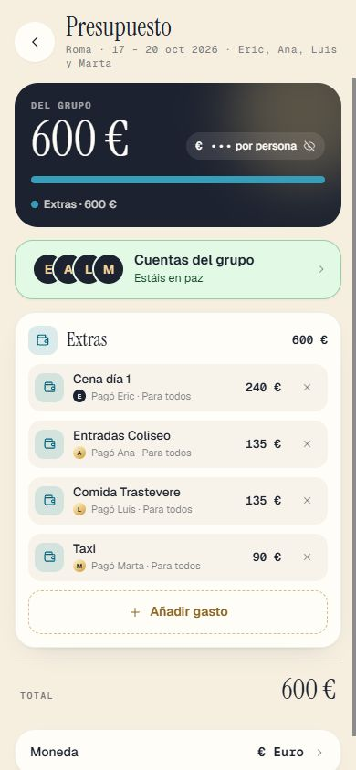
10n2_07_presupuesto_en_paz 10n2_08_campana_de_ana 10n2_09_editar_gasto 10n2_10_quien_sale_sigue 10n2_11_cuentas_vistas_por_ana 10n2_12_sin_compartir